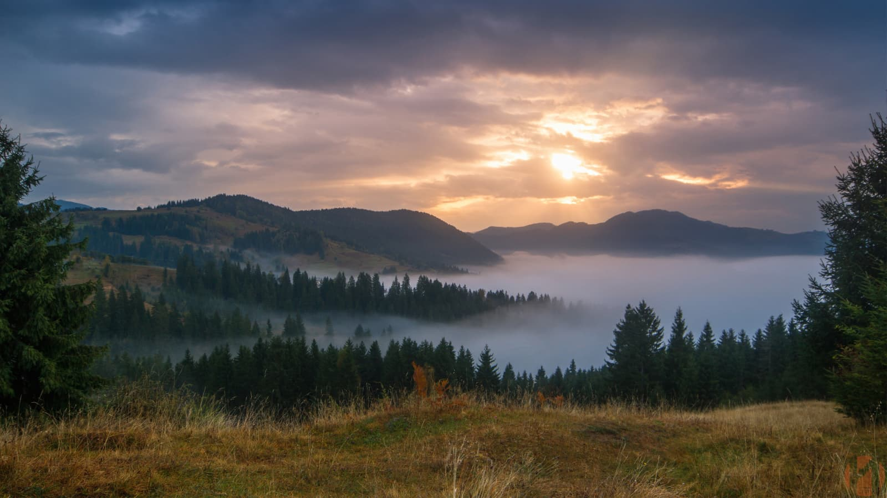
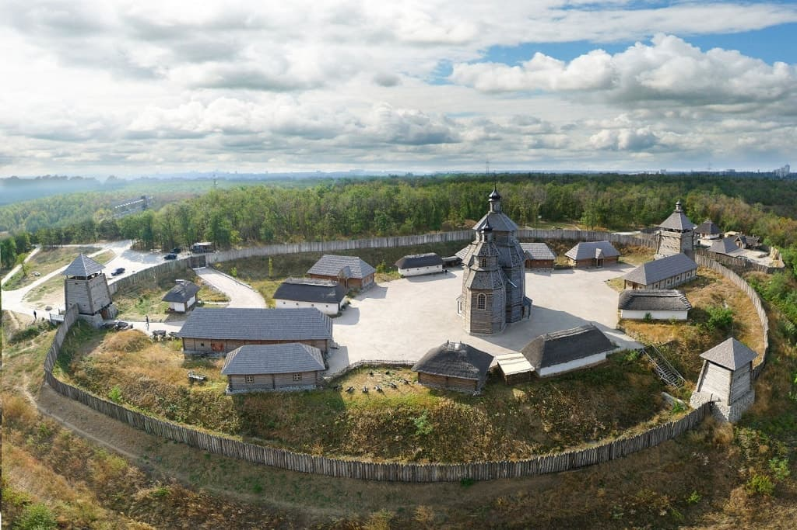
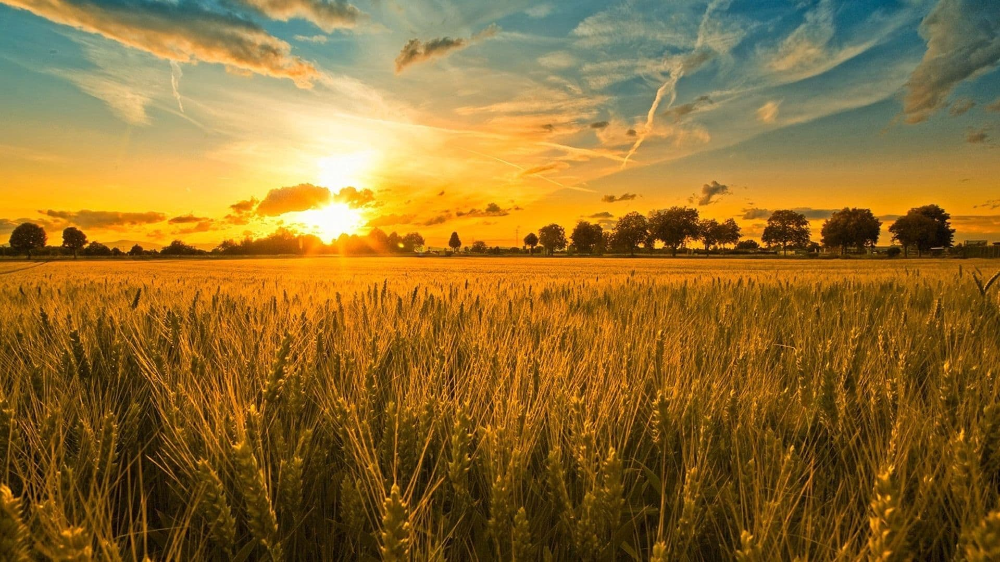
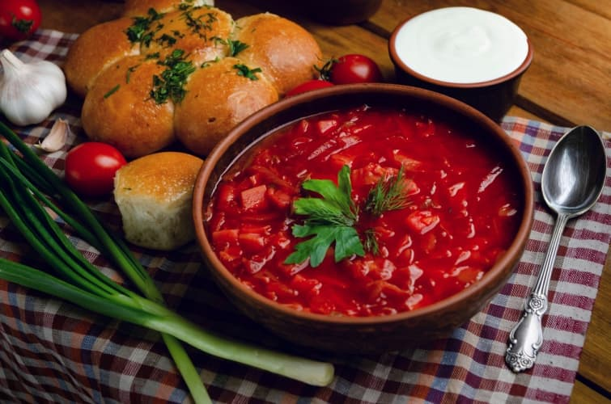
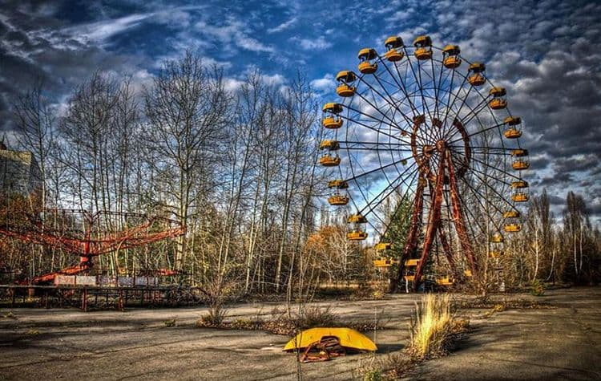

Карпати
Якщо подорожувати по Закарпаттю, то створюється враження, що виїхав за кордон.
Приголомшливо красива природа Карпат, чисте, прозоре повітря, різноманіття мінеральних джерел, потужні водоспади. Погодьтеся - це рай для очей, для душі. Карпатська область - екологічно найчистіша в України, адже в Карпатах багато заповідних зон, в тому числі знаменитий Карпатський заповідник.
Озеро Синевир - казкова перлина Карпат, найкрасивіше гірське озеро, розташоване на висоті 989 м над рівнем моря. Водопад Шипот на річці Пилипець висотою 14 метрів, що падає вниз у вигляді безлічі мальовничих каскадів. Навесні, коли тане зимовий сніг, він привертає величезну кількість туристів.
Чудові умови для лікування і оздоровлення. Адже в Карпатах близько 400 джерел, що представляють всі основні групи мінеральних вод. Саме завдяки мінеральним джерелам, в Карпатах створено безліч санаторіїв, оздоровчих комплексів. Мінеральну воду застосовують у вигляді ванн, інгаляцій, гідромасажу, звичайного прийому води, але в певний час і при відповідному температурному режимі. Чисте гірське повітря, хвойні ліси, первозданна природа, в сукупності з мінеральними джерелами створюють цілий комплекс ідеальних умов для лікування.Чудові умови для лікування і оздоровлення. Адже в Карпатах близько 400 джерел, що представляють всі основні групи мінеральних вод. Саме завдяки мінеральним джерелам, в Карпатах створено безліч санаторіїв, оздоровчих комплексів. Мінеральну воду застосовують у вигляді ванн, інгаляцій, гідромасажу, звичайного прийому води, але в певний час і при відповідному температурному режимі. Чисте гірське повітря, хвойні ліси, первозданна природа, в сукупності з мінеральними джерелами створюють цілий комплекс ідеальних умов для лікування.
Відмінні умови для проведення активного відпочинку в Карпатах весь рік. Гірськолижні курорти (найпопулярніший серед них - зимовий курорт Буковель), з радістю приймають туристів з усіх куточків країни та зарубіжжя. Навесні проводиться рафтинг на річках Чорний Черемош, Черемош, Білий Черемош і Прут. Не менш популярні в Карпатах верхова їзда, катання на квадроциклах, снігоходах.
Можливість дегустації приголомшливих закарпатських вин і коньяків. Завдяки багатовіковим традиціям, закарпатські вина - це вже візитна картка краю. Особливою популярністю у туристів користуються екскурсії в винні погреби і в дегустаційні зали.
Запорізька січ
Унікальний історико-культурний комплекс, що відтворює образ козацької столиці і атмосферу часів козацтва. Ідея створення на острові Хортиця історико-культурного комплексу, що є узагальненим образом козацьких столиць-січей XVI-XVIII століть виникла ще в 1965 році, але до самого отримання Україною статусу незалежної держави ця ідея була знехтувана з ідеологічних міркувань тих часів. Урочиста закладка комплексу відбулася 14 жовтня 2004 року. Не дивлячись на те, що немає жодного підтвердження існування січей на острові Хортиця, це живописне містечко гармонійно вписалося в навколишній природний ландшафт, що особливо яскраво підкреслює атмосферу того часу.
Січ на Хортиці побудована по образу справжньої Січі в декілька зменшеному масштабі, тут присутні всі елементи існуючих Січей. Довкола комплексу споруджені захисні фортифікаційні укріплення, що складаються з високого валу, глибокого рову і огорожі у вигляді дерев'яного частоколу. По периметру частоколу знаходиться три вежі – в'їзна вежа з південного боку, де знаходиться центральний вхід в комплекс, мала вежа – в східній частині Коша, звідки відкривається вид на Дніпро, і вежа-дзвіниця, яка знаходиться на межі Коша і передмістя.
Українське поле
Україна володіє значним земельним потенціалом - 60,3 млн гектарів. Це становить 5,7% території Європи. Наразі в Україні нараховується понад 41 мільйон гектарів сільськогосподарських угідь. Із них 32,5 мільйонів гектарів – рілля. Тому Україну історично називають житницею Європи. Тут зосереджено близько 25% світових чорноземних ґрунтів, відомих високим рівнем родючості.
Завдяки високим якостям сільськогосподарських угідь Україна є найбільшим у світі експортером соняшникової олії та одним із найбільших експортерів зерна. Основними сільськогосподарськими культурами, що роблять Україну одним із світових лідерів, є зернові та кормові культури, включаючи пшеницю, кукурудзу, ячмінь, соняшник, цукровий буряк, тютюн, бобові, фрукти та овочі.
За підсумками 2021 року Україна експортувала агропродовольства на суму $27,9 млрд, що майже на 25% більше, ніж рекордний показник 2020-го ($22,4 млрд).
Мрія
1988 року в України з’явилася мрія. Ні, не примарна і далека, а реальна — потужна і крилата. Це був літак АН-225 «Мрія». Його розробка почалася в 1985 році, а вже за три роки «Мрія» здійснила перший політ із заводського аеродрому в столичному Святошино.
Літак створювався для перевезення об’єктів космічної промисловості, а його важливою характеристикою була здатність транспортувати надважкі й надгабаритні вантажі як усередині, так і на зовнішній підвісці. Уже в березні 1989 року «Мрія» встановила 110 світових рекордів за швидкістю, висотою та вантажопідйомністю. А 2004 року Міжнародна федерація повітроплавання внесла літак АН-225 до Книги рекордів Гіннеса за його 240 рекордів, що стало абсолютно унікальним випадком в авіації.
Останні 20 років літак виконував перевезення гуманітарних великогабаритних вантажів до місць, що постраждали від стихійних лих: землетрусів, цунамі, ураганів.
Борщ як частина українського культурного коду
1 липня ЮНЕСКО вніс український борщ до переліку об’єктів нематеріальної культурної спадщини, яка потребує охорони. Українська національна страва опинилась у компанії узбецького і таджицького плову (внесені у 2016 році), вірменського лаваша (2016), азербайджанської долми (2017), неаполітанської піци (2017) тощо. Наявність у цьому списку доводить, що та чи інша страва є своєрідним етнокультурним феноменом, символом національної культури, вартим дослідження і захисту. Таким відтепер офіційно є й український борщ. Розповідаємо про його унікальність і варіативність, місце в українській культурі і міжнародній «гастрономічній битві».
Щедрик

«Щедрик» звучав та продовжує звучати і в українських домах, і на кращих концертних майданчиках світу. Щедрівка, на основі якої композитор Микола Леонтович створив легендарну пісню, підкорила світ. Але мало хто знає, що вона ще й стала символом багаторічної боротьби українців за незалежність від Росії. У 2022 році виповнюється 100 років від дня американської прем’єри «Щедрика» та 145 років із дня народження геніального композитора Миколи Леонтовича.
Прип'ять
26 квітня 1986 року – день найбільшої в історії людства техногенної катастрофи. Під час експерименту на 4-му реакторі Чорнобильської атомної електростанції сталися два вибухи. В атмосферу Землі вирвалась хмара радіоактивного пилу. Вітер поніс на північний захід небезпечні радіоактивні ізотопи, які осідали на землю, проникали у воду. За числом потерпілих від аварії Україна займає перше місце серед колишніх республік Радянського Союзу. На долю Білорусі припало близько 60% шкідливих викидів. Від радіаційного забруднення сильно постраждала також і Росія. Потужний циклон проніс радіоактивні речовини територіями Литви, Латвії, Польщі, Швеції, Норвегії, Австрії, Фінляндії, Великої Британії, а пізніше – Німеччини, Нідерландів, Бельгії.
Місто-привид Прип'ять - німий свідок того, як життя його жителів в одну мить розділилось на "до" і "після". Місто, в яке ніколи не зможуть повернутися ті, для кого воно було створене. Пустельні вулиці, мертві вікна будинків, покинуті квартири зі збереженими фотографіями на стінах, дерева на дахах висоток – так зараз виглядає місто.